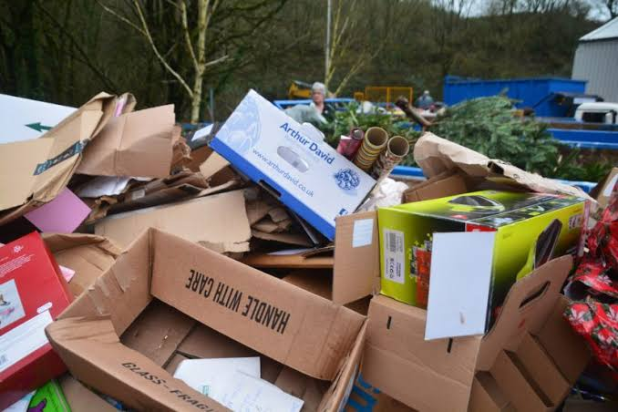
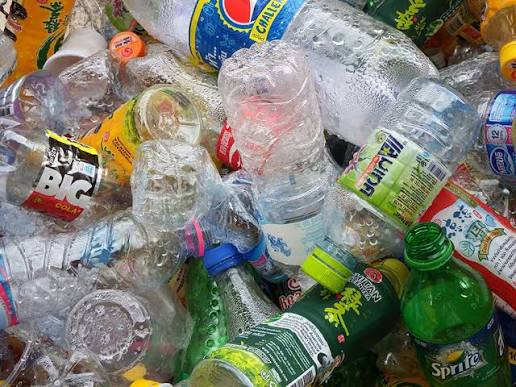
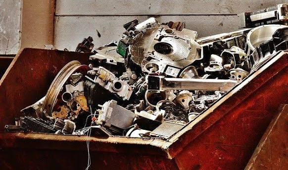
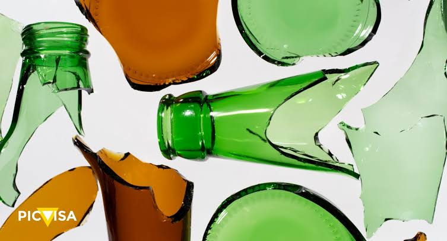
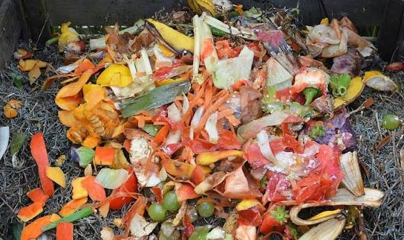

Volver a la página anterior Ir a la Portada Siguiente página: Las 3R
Son materiales hechos de fibras vegetales que se reciclan siempre que estén limpios y secos. Ejemplos: periódicos, revistas, hojas usadas y cajas de cartón.

Son envases ligeros derivados del petróleo que tardan muchos años en degradarse, pero que pueden fundirse para hacer otros productos. Ejemplos: botellas de agua, envases de champú, botes de limpieza y bolsas limpias.

Son residuos hechos de aluminio, acero u hojalata que pueden fundirse muchas veces sin perder calidad. Ejemplos: latas de refresco, latas de conservas y tapas metálicas de frascos.

Es un material hecho a partir de arena y minerales que se aprovecha por completo al fundirse de nuevo. Ejemplos: botellas de bebidas, tarros de mermelada y frascos de perfume.

Son desechos de origen vegetal o animal que se descomponen rápido de forma natural y sirven para hacer abono. Ejemplos: cáscaras de frutas, restos de verduras, cáscaras de huevo y hojas secas.
